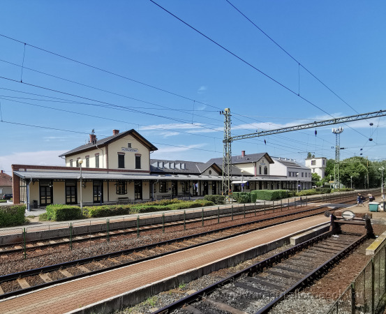
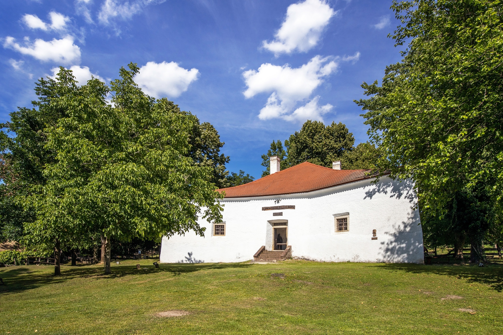
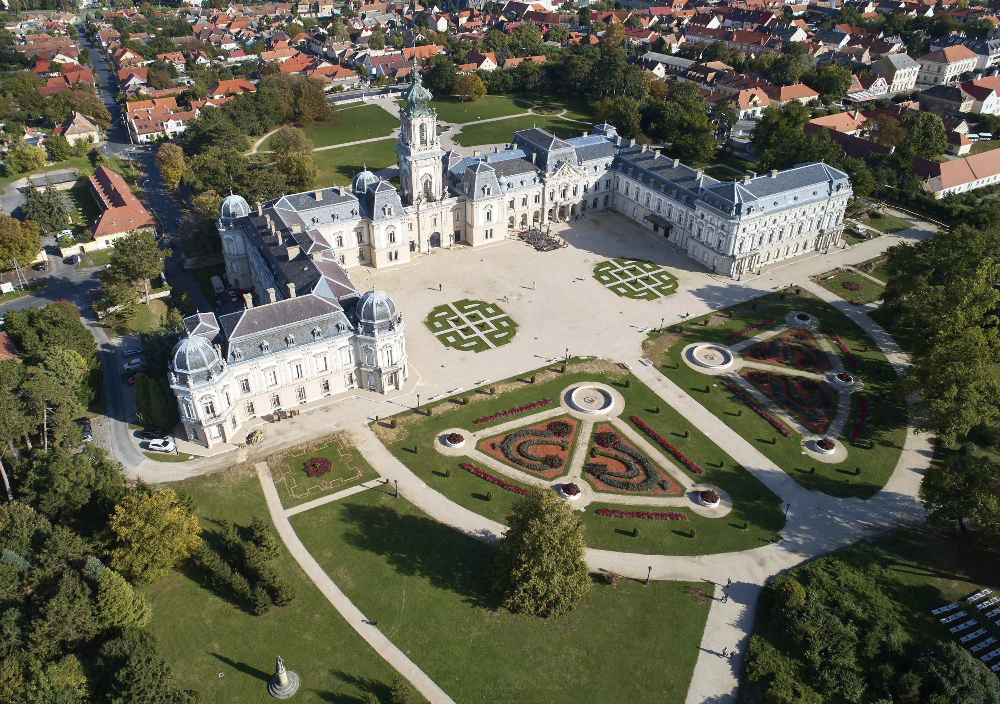

Warum lohnt sich ein Besuch in Balatonszentgyörgy?
Balatonszentgyörgy verbindet ruhige Balatonlandschaft, gute Bahnanschlüsse und nahe Ausflugsziele rund um Keszthely und den westlichen Balaton.

Entdecke Balatonszentgyörgy mit einem Klick!


Balatonszentgyörgy verbindet ruhige Balatonlandschaft, gute Bahnanschlüsse und nahe Ausflugsziele rund um Keszthely und den westlichen Balaton.


Ein besonderes kleines Museum mit historischer Atmosphäre, Ausstellungen und familienfreundlichen Erlebnissen nahe dem Balaton.
Route anzeigen
Das eindrucksvolle Schloss in Keszthely mit historischen Räumen, Bibliothek, Park und Ausstellungen ist eines der bekanntesten Ziele der Region.
Route anzeigen
Der markante Aussichtsturm in Balatonboglár bietet einen weiten Blick über den Balaton und die umliegende Landschaft.
Route anzeigen